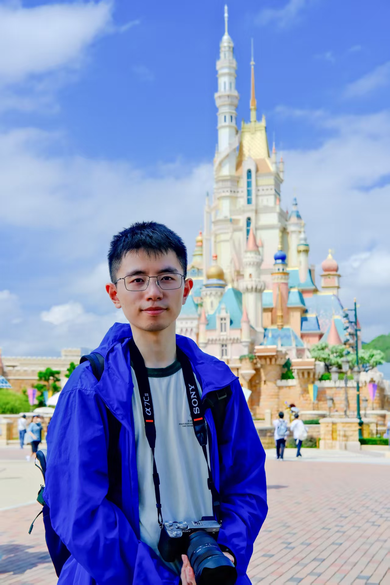

|
Yeke CHEN (陈烨柯) I am currently a first-year PhD student in ArcLab at the University of Hong Kong, supervised by Prof. Peng LU. Previously, I received my bachelor's degree from Zhejiang University, majoring in Automation. My overall GPA is 3.95/4.0, 89.8/100, and my ranking is 2/58. During my undergraduate years, I was a team member of ZJUNlict from 6/2022 to 6/2023. I was a research intern at ZJU Robotics Lab advised by Prof. Rong XIONG and Prof. Yue WANG from 7/2023 to 10/2023. After that, I was a research intern at ZJU FAST Lab advised by Prof. Chao XU and Prof. Fei GAO. |
 |
{kind=link}
Research and Projects |
|
|
Learning Autonomous and Safe Quadruped Traversal of Complex Terrains Using Multi-Layer Elevation Maps
Yeke Chen, Ji Ma, Zeren Luo, Yimin Han, Yinzhao Dong, Bowen Xu, Peng LU IEEE Robotics and Automation Letters (RA-L), 2025. Paper/Video/Video2 We present a hierarchical control framework for quadrupedal robots that enables safe and autonomous traversal of cluttered terrains, with a novel multi-layer elevation map representation. |
|
|
Whole-body control through narrow gaps from pixels to action
Tianyue Wu, Yeke Chen, Tianyang Chen, Guangyu Zhao, Fei Gao IEEE International Conference on Robotics and Automation (ICRA), 2025. Paper/Video We explore a purely data-driven method to enable underactuated multirotors to fly through body-size narrow gaps in simulation. |
|
|
Learning Agility Adaptation for Flight in Clutter
Guangyu Zhao*, Tianyue Wu*, Yeke Chen, Fei Gao IEEE Robotics and Automation Letters (RA-L), 2024. Page/Paper We propose a hierarchical learning and planning framework to endow flight vehicles with the ability of agility adaptation in partially observable cluttered environments. |
 |
Robocup
Zhejiang Robot Competition, 2022; China Robot Competition/Robocup China Open, 2023 Introduction / video1 / video2 During my year in the team, I was responsible for developing the muti-vehicle-ball-passing-point calculating module based on OpenAcc. I'm also responsible for refining the ball interception module and completing the mapping from velocity to force to achieve the regulation of ball speed. |
|
|
Continuous Trajectory Generation for Autonomous Driving
SRTP(Student Research Training Program) , Zhejiang University, 2022-2023 Advised by Prof. Rong Xiong We designed and trained a two-stage network, which firstly generates feasible domain based on rough navigation and RGB images, and then fuses point cloud information to generate continuous trajectory expressions. Finally, we realized vehicle autonomous driving in CARLA. |
 |
Supermarket Shopping Robot
Zhejiang University Robot Competition & Zhejiang Robot Competition, 2022 code&page We Designed the robot from scratch and implemented functions such as object detection, multi-device communication, object grasping, and line-following. |

|
Path Planning and Tracking
Course Project, 2023 code&page I realized RRT*, A* and JPS path planning methods and realized DWA trajectory tracking method. |

|
Space Robot
Course Project, 2023 code&page We completed the inverse kinematics of the space robot and the trajectory planning algorithm of joint space based on polynomial interpolation. |
Awards |
| China Robot Competition / Robocup China Open (SSL) - Second Prize | 11/2022 |
| Zhejiang Robot Competition - First Prize | 5/2023 |
| Zhejiang Robot Competition - Second Prize | 8/2022 |
| Zhejiang Robot Competition - Third Prize | 7/2021 |
| Zhejiang University Robot Competition - First Prize | 6/2021&6/2022 |
| Zhejiang Provincial Government Scholarship | 2021 & 2022 |
| Zhejiang University Scholarship - Second Prize | 2021 & 2022 & 2023 |
| Extra High Voltage Grid Scholarship | 10/2023 |
| Outstanding Graduates of Zhejiang Province (Top 5%) | 6/2024 |
| Outstanding Graduates of Zhejiang University | 6/2024 |
Personal Ability |
| skills: python/C++/MATLAB/ROS/Pytorch/SolidWorks/OpenCV/CUDA C |
|
Last updated: 31/07/2025
|